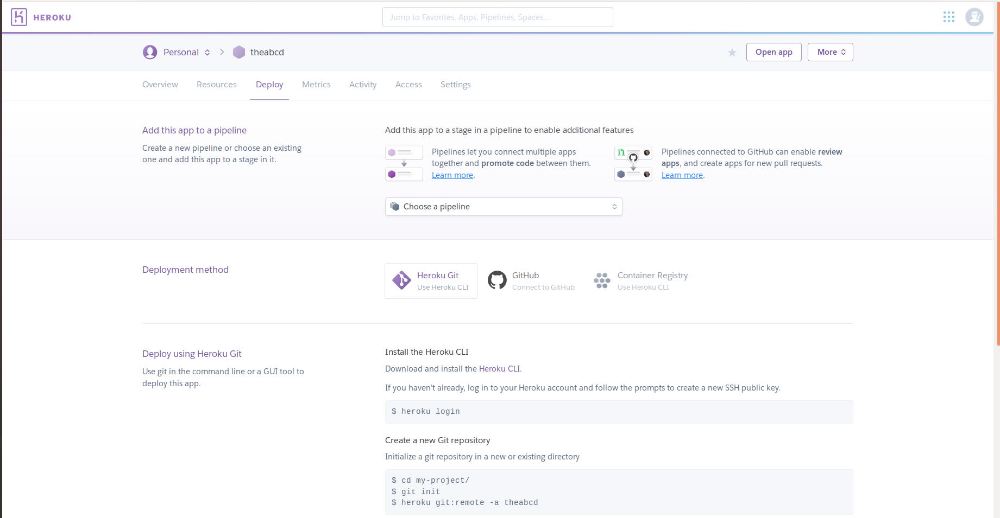
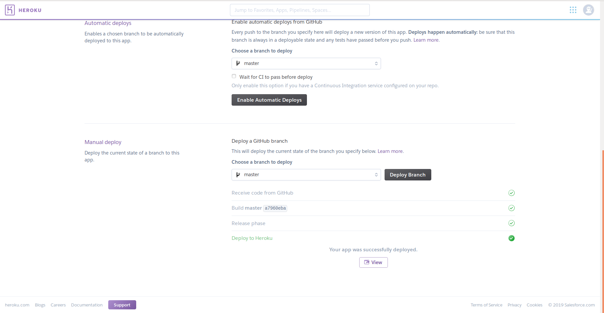

Getting your API_TOKEN
Search for botfather
This is the link for the official BotFather is https://t.me/BotFather


The username is unique, so if the username is take try another one.
Remember the API_TOKEN should be secured else your bot can be controlled by others.
Requirements for PythonTelegramBot
pip3 install telebot
pip3 install python-telegram-bot
These libraries are used to install the PythonTelegramBot packages.
#!/usr/bin/python
# This is a simple echo bot using the decorator mechanism.
# It echoes any incoming text messages.
import telebot
API_TOKEN = 'Your_API_Token_Here'
bot = telebot.TeleBot(API_TOKEN)
# Handle '/start' and '/help'
@bot.message_handler(commands=['help', 'start'])
def send_welcome(message):
bot.reply_to(message, "\nHi there, I am EchoBot.\nI am here to echo your kind words back to you. Just say anything nice and I'll say the exact same thing to you!\n")
# Handle all other messages with content_type 'text' (content_types defaults to ['text'])
@bot.message_handler(func=lambda message: True)
def echo_message(message):
bot.reply_to(message, message.text)
bot.polling()
If you don't have a API token for your bot then vist my page to know how to get it.
Now run the code
python3 file_name.py *If you want your bot based on commands then below is used for setting the command.
@bot.message_handler(commands=['help', 'start'])Below this we should write the function that should be executed when the command is sent.
Prev NextRequirements for hosting PythonTelegramBot
For deploying our bot we will use flask library, because for contacting bot we use webhooks method.
So to install flask use,
pip3 install flask
After installing we should change our code a little bit so as to work with flask.
server = Flask(__name__)
PORT = int(os.environ.get('PORT', '8443'))
Use the blow code at the end of the application.
@server.route('/' + API_TOKEN, methods=['POST'])
def getMessage():
bot.process_new_updates([telebot.types.Update.de_json(request.stream.read().decode("utf-8"))])
return "!", 200
@server.route("/")
def webhook():
bot.remove_webhook()
bot.set_webhook(url='Your_App_Name_Link_Here' + API_TOKEN)
return "!", 200
if __name__ == "__main__":
server.run(host="0.0.0.0", port=int(os.environ.get('PORT', 5000)))
After this the final code looks like
#!/usr/bin/python
# This is a simple echo bot using the decorator mechanism.
# It echoes any incoming text messages.
import telebot
from flask import Flask, request
import os
API_TOKEN = 'Your_API_Token_Here'
bot = telebot.TeleBot(API_TOKEN)
server = Flask(__name__)
PORT = int(os.environ.get('PORT', '8443'))
# Handle '/start' and '/help'
@bot.message_handler(commands=['help', 'start'])
def send_welcome(message):
bot.reply_to(message, "\nHi there, I am EchoBot.\nI am here to echo your kind words back to you. Just say anything nice and I'll say the exact same thing to you!\n")
# Handle all other messages with content_type 'text' (content_types defaults to ['text'])
@bot.message_handler(func=lambda message: True)
def echo_message(message):
bot.reply_to(message, message.text)
@server.route('/' + API_TOKEN, methods=['POST'])
def getMessage():
bot.process_new_updates([telebot.types.Update.de_json(request.stream.read().decode("utf-8"))])
return "!", 200
@server.route("/")
def webhook():
bot.remove_webhook()
bot.set_webhook(url='Your_App_Name_Link_Here' + API_TOKEN)
return "!", 200
if __name__ == "__main__":
server.run(host="0.0.0.0", port=int(os.environ.get('PORT', 5000)))
Now, we need the libraries that are used for this bot. So to get the librares use,
pip3 freeze requirements.txtYou can see the libraries in "requirements.txt". Don't remove the libraries that you don't know as they are dependent libraries.
Now we should create a "Procfile" and type this code in that file
web: python3 file_name.pyNote:Don't change name of "requirements.txt" and "Procfile"('P' is capital).
Now, open github and create your repository, after that upload your file_name.py,requirements.txt and Procfile to github.
Now, signup/signin to heroku and Create a new app.

Now, go to the Deploy section and now connect to github, then after type your repository name and connect it.

Every thing is done. You are set to go
Now press come down and press deploy branch.
After successfull deployment you can use your bot.
*You can get your app name from settings section in heroku.